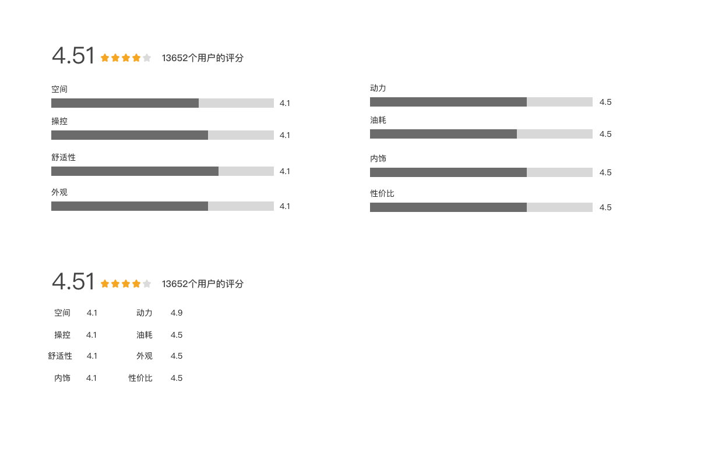
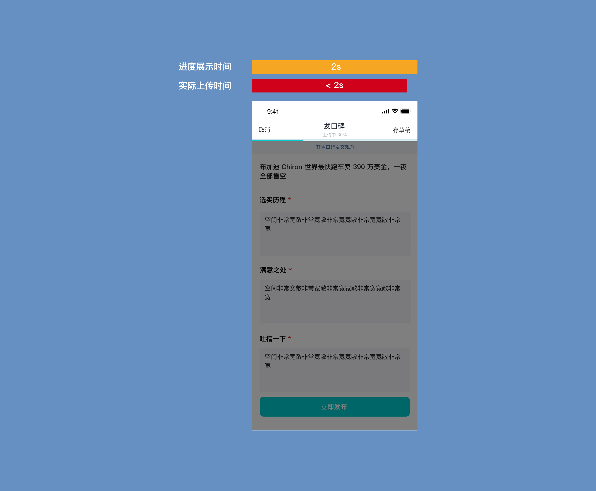
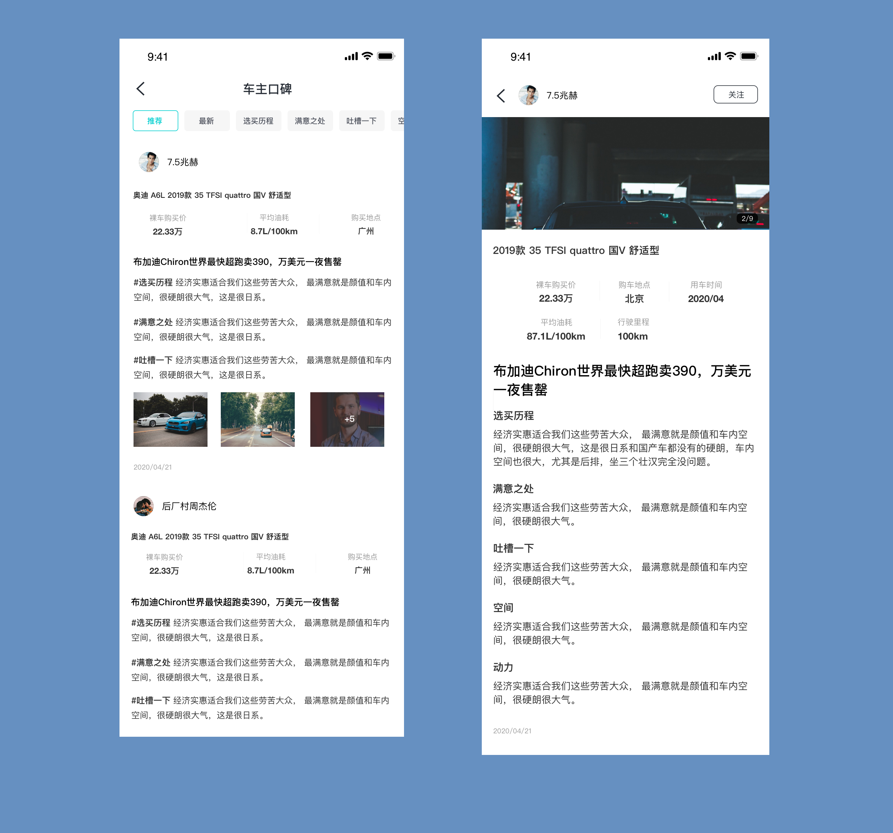
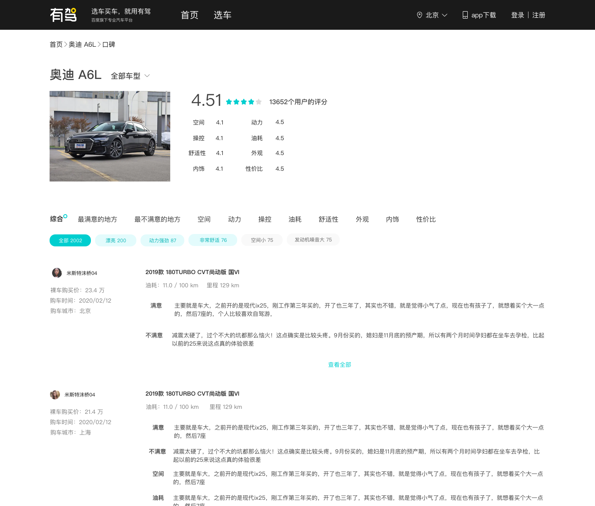

评估

上线后我们发现发布器有待改进
根据数据埋点分析，我们发现到达口碑第一页的人中有 11% 的人继续到第二页填写。第一页到第二页的转化率较低，原因可能是一部分用户本无意向填写，另一部分用户觉得成本太高而放弃。
我对发布器进行了一点小的优化。
车主评价的前端展示与发布
需求分析，交互设计
项目时间：2020.07
我们给有驾设计了口碑的展示端和发布端，帮助有驾沉淀 UGC 内容以及帮助用户更好的了解车型.
查看其他车主的评价是很多购车者购车的必经之路，也是汽车资讯类网站和 App 的重要模块。我们设计了有驾车主口碑内容消费端和发布器端的。我们希望这个功能能提升用户的粘稠度，帮助用户更好的了解自己感兴趣的车系车型，同时帮助有驾沉淀内容，提升在汽车资讯类网站和 App 上的竞争力。
我们需要提供给用户在移动端上发布车主评价的功能。用户可以在移动端和网页端上查看评价内容。
我们将口碑评价分为总体评价和细节评价2个部分。每个部分再分为不同子纬度。
口碑填写规则比较复杂，填写成本也比较高。设计要解决的核心问题是如何让用户完成填写。同时，我们也希望填写过程顺畅高效。
通过拆解用户填写的流程，我们分析了各个阶段用户会面临的问题，并定义具体设计目标。
在评分数据展示上，我们考虑了不同的展示形式。
我们把填写过程拆分成 2 步，以减小用户的心理压力。
给用户及时反馈，告知当前进度，帮助用户达到目标。
如果内容上传时间小于2s，我们展示一个虚假的进度条，使上传状态的展示时间至少有2s，给用户撤销的时间。
App 端
PC 端
根据数据埋点分析，我们发现到达口碑第一页的人中有 11% 的人继续到第二页填写。第一页到第二页的转化率较低，原因可能是一部分用户本无意向填写，另一部分用户觉得成本太高而放弃。
我对发布器进行了一点小的优化。